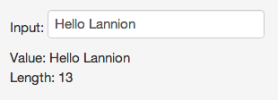
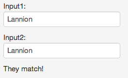
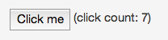

- Julien Vey
- Consultant et Formateur à Zenika Paris
- Développeur Java, GWT... Dart
- Zenika
- Java, Open Source, Agilité
- Paris, Rennes, Nantes, Lyon
- www.zenika.com
- blog.zenika.com
Qui suis-je ?
De nos jours, côté serveur...
De nos jours, côté navigateur...
Pourquoi Dart ?
- Proposer une alternative à JavaScript
- Faciliter le développement de larges applications web
- Parce que Google
Pourquoi Dart ?
Parce que le développement web c'est bien...
- Aucune installation
- Multi-Devices
- Desktop
- Tablette
- Smartphone
- Itératif et rapide
Pourquoi Dart ?
Parce que le développement web c'est bien... Mais c'est aussi
- Manque de structure
- Outillage très limité
- Les concepts de librairies, packages et modules ne sont pas inhérents au langage.
Quelques mots sur JavaScript
- JavaScript a beaucoup d'avantages mais a aussi ses défauts
- Beaucoup de conversions de type implicites
- Pas de vérification de type sur les arguments
- Pas de bornes sur les tableaux
- wtfjs.com
Quelques mots sur JavaScript
- Les VMs JavaScript sont très performantes
- On atteint la limite des optimisations possibles
- C'est pourquoi...

Dart, Kesako ?
Dart, c'est...
- Un langage de programmation, actuellement en version M1
- Un IDE, Dart Editor, basé sur Eclipse
- Une VM standalone
- Une VM embarqué dans Chromium (surnommée Dartium)
- Un ensemble de librairies (html, json, isolate...)
- Un framework web, Dart Web Components
Objectifs & Contraintes
- Objectifs
- Fournir un riche ensemble de fonctionnalités
- Performant
- Facile à développer
- Contraintes
- Doit être vu comme un langage familier pour la majorité des développeurs
- Doit compiler efficacement en JavaScript
Le langage en quelques mots
- Orienté objet
- À base de classes
- Héritage simple
- Typage optionnel
- Reflexion basée sur des "Mirrors"
- Mécanisme de concurrence basé sur les acteurs
Il était une fois...
un main
// Point d'entrée d'une application Dart
main() {
var group = "Code d'Armor"; // Déclaration et initialisation d'une variable
sayHello(group); // Appel de fonction
}
// On définit une fonction
sayHello(String group) {
print("Hello $group"); // Affichage dans la console
}
Les classes
class Coordonnees {
num latitude, longitude; // getter et setter implicites
}
main() {
var lannion = new Coordonnees();
lannion.latitude = 48; // Utilisation du setter implicite
assert(lannion.latitude == 48 ); // Utilisation du getter implicite
assert(lannion.longitude == null); // Les attributs ont pour valeur null par défaut
}
Les constructeurs
class Coordonnees {
num latitude, longitude;
Coordonnees(num latitude, num longitude) {
this.latitude = latitude;
this.longitude = longitude;
}
}
Hum... un peu de sucre syntaxique ?
class Coordonnees {
num latitude, longitude;
Coordonnees(this.latitude, this.longitude);
}
Les constructeurs nommés
class Coordonnees {
num latitude, longitude;
Coordonnees.equateur(num longitude) {
this.latitude = 0;
this.longitude = longitude;
}
}
main(){
var coord = new Coordonnees.equateur(12);
}
Possibilité d'avoir deux constructeurs avec la même signature, mais deux noms différents
Héritage
class Personne {
String prenom;
Personne.fromPrenom(this.prenom);
}
class Developpeur extends Personne {
Developpeur.fromPrenom(String prenom) : super.fromPrenom(prenom);
// L'appel à super est obligatoire car Personne n'a pas de constructeur par défaut
}
main() {
var julien = new Developpeur.fromPrenom("Julien");
}
Pas d'interfaces explicites
Chaque classe Dart déclare une interface implicite
Pour définir une "pseudo-interface", il faut passer par une classe abstraite
abstract class I {
String aMethod();
}
class A implements I {
String aMethod() => "some text";
}
Le typage statique optionnel
P’t'et’ ben qu’oui... p’t'et’ ben qu’non... !?
- Les types sont syntaxiquement optionnels
- Ils n'ont aucun effet au runtime
- Servent à documenter le code
- Sont interprétés par les IDE pour fournir des feedback rapides et favoriser la complétion
Mais pourquoi donc un typage Optionnel ?
Pour permettre une adoption massive par le plus grand nombre de développeurs, habitués au typage statique ou au typage dynamique
Le typage statique optionnel
Un exemple
Les deux syntaxes suivantes sont strictement équivalentes
void sayHello(String name){
print('Hello $name');
}
sayHello(name){
print('Hello $name');
}
Fonctions et Closures
Les fonctions
void sayHello(String name){
print('Hello $name');
}
// Est équivalent à
void sayHello(String name) => print('Hello $name');
Les fonctions sont des objets de premier niveau
var list = ['Julien', 'Jean', 'Paul']; list.forEach(sayHello)
Que l'on peut aussi écrire ainsi
list.forEach((e) => print('Hello $e'))
Opérateur Cascade
À la place de...
var button = query('#button')
button.text = 'Click to Confirm'
button.classes.add('important')
button.on.click.add((e) => window.alert('Confirmed!'));
On peut écrire...
query('#button')
..text = 'Click to Confirm'
..classes.add('important')
..on.click.add((e) => window.alert('Confirmed!'));
Encore un peu ?
- A Tour of the Dart Language
- http://www.dartlang.org/docs/dart-up-and-running/ch02.html
- Les paramètres optionnels
- Les génériques
- La gestion des exceptions
- Packages, librairies, imports
- ...
Les librairies
dart:html
Manipuler les objets et éléments du DOM
Une API de recherche d'éléments à la JQuery
Element elem1 = query('#monid'); // Un élément ayant l'id 'monid'
Element elem2 = query('.cssClass'); // Un élément ayant la class 'cssClass'
List<Element> elems1 = queryAll('div'); // Tous les éléments ayant le tag (<div>).
List<Element> elems2 = queryAll('input[type="text"]'); // Find all text inputs.
La gestion des évènements
query('#submitInfo').on.click.add((e) => submitData());
Mais aussi... création et modifications d'éléments HTML... HttpRequest
dart:isolate
La gestion de la concurrence made in Dart
Dart est monothread, mais propose un modèle de concurrence inspiré d'Erlang et basé sur les acteurs
Tout code Dart est exécuté au sein d'un Isolate
Les isolates ne partagent aucun espace mémoire
Ils communiquent par passage de messages uniquement
Les autres librairies Dart
- dart:core
- Collections, Exceptions, classes utilitaires
- dart:io
- Pour l'exécution côté serveur
- dart:math
- dart:json
- dart:crypto
Les modes d'exécution
Dans le navigateur, nativement
Le mode 'classique' d'exécution
<script type='application/dart'>
void main() {
HTMLElement element = document.getElementById('message');
element.innerHTML = 'Hello Lannion';
}
</script>
Le code est exécuté par la VM Dart dans le navigateur
Ne fonctionne que dans Dartium... pour l'instant
Dans le navigateur, compilé en JavaScript
Le mode compatibilité
Ajout du script dart.js dans le code source
<script type="application/dart" src="web/CodeDarmor.dart"></script> <script src="https://dart.googlecode.com/svn/branches/bleeding_edge/dart/client/dart.js"></script>
On le retrouve ainsi dans le DOM
<script src="http://127.0.0.1:3030/Users/julienvey/dart/CodeDarmor/web/CodeDarmor.dart.js"></script> <script src="https://dart.googlecode.com/svn/branches/bleeding_edge/dart/client/dart.js"></script>
Si le navigateur n'est pas capable d'exécuter du Dart, il utilise la version compilé en JavaScript avec dart2js
dart2js
dart2js transforme une application Dart en application JavaScript
Phase de compilation semblable à ce que l'on peut avoir avec GWT
- Supression de code mort
- Optimisation et obfuscation
Étape obligatoire pour qu'une application Dart soit compatible avec tous les navigateurs du marché
Dart côté serveur
Le mode 'full dart'
Dart fourni une machine virtuelle autonome pouvant être lancée en ligne de commande
Permet de développer des applications Dart Serveur
Dart Web Components
Le framework web de Dart
Web Components
Une initiative commune aux différents acteurs du web
Favoriser la composition et la réutilisation d'éléments HTML et CSS
http://dvcs.w3.org/hg/webcomponents/raw-file/tip/explainer/index.html
Deux spécifications en cours
- HTML Templates
- Shadow DOM
Web Components
Les templates
<template id="commentTemplate">
<div>
<img src="">
<div class="comment"></div>
…
</div>
</template>
var t = document.querySelector("#commentTemplate");
// Populate content and img[src] values in the template.
someElement.appendChild(t.content.cloneNode());
L'élément est parsé mais le code n'est pas exécuté et le dom n'est pas affiché
Web Components
Les éléments Custom - Définition
<element extends="button" name="x-fancybutton">
<template>
<style scoped>
div.fancy {
…
}
</style>
<div class="fancy">
<content></content>
<div id="t"></div>
<div id="l"></div>
<div id="b"></div>
</div>
</template>
</element>
Web Components
Les éléments Custom - Utilisation
<element extends="button" name="x-fancybutton"> <!-- definition -->
...
</element>
<button is="x-fancybutton" onclick="showTimeClicked(event);"> <!-- use -->
Show time
</button>
Web Components
Le shadow DOM
Le DOM contenu dans l'élément custom n'est pas visible
Seul le contenu de l'élément content est visible
Web Components
En conclusion
Les Web Components constituent une grande avancée pour le développement d'applications Web
Les spécifications n'en sont qu'à l'état Draft
Ces fonctionnalités ne sont donc pas encore disponibles dans tous nos navigateurs
Que fait Dart pour y remédier ?
Dart & les Web Components
Le tooling
Dart fournit un pré-compilateur pour permettre l'utilisation des Web Components pour tous les navigateurs
- En ligne de commande
- Embarqué dans le Dart Editor
Dart & les Web Components
Model-Driven-View
Outre les composants, Dart Web Component fournit également un mécanisme de databinding
- Databinding unidirectionnel
- Databinding bidirectionnel
- Template conditionnel
- Boucles
- Listener d'évènements du DOM
Databinding
<div>
Input:
<input type="text" data-bind="value:str" placeholder="type something here">
<div> Value: {{str}}</div>
<div> Length: {{str.length}}</div>
</div>
<script type="application/dart">
String str = '';
main() {}
</script>

Templating conditionnel
<div>
<div> Input1: <input type="text" data-bind="value:str1"></div>
<div> Input2: <input type="text" data-bind="value:str2"></div>
<template instantiate="if str1 == str2">
<div>They match!</div>
</template>
</div>
<script type="application/dart">
String str1 = '';
String str2 = '';
main() {}
</script>

Handlers d'évènements
<div>
<button data-action="click:increment">Click me</button>
<span>(click count: {{count}})</span>
</div>
<script type="application/dart">
int count = 0;
void increment(e) { count++; }
main() {}
</script>

Dart
En conclusion
État des lieux
- Ouverture du langage au public en Octobre 2011
- Sortie en version Milestone 1 en Octobre 2012
- Editor, Web Components en constante amélioration
- Premiers benchs très satisfaisant
- Temps au démarrage 10x plus rapide
- Google investit fortement dans Dart
- Une vingtaine de développeurs à plein temps dans différents pays
- De nombreuses présentations lors du dernier Google I/O
Quelques resources
- Site officiel
- les patterns JavaScript en Dart
- Les sources de Dart
- Communauté Française sur le langage Dart